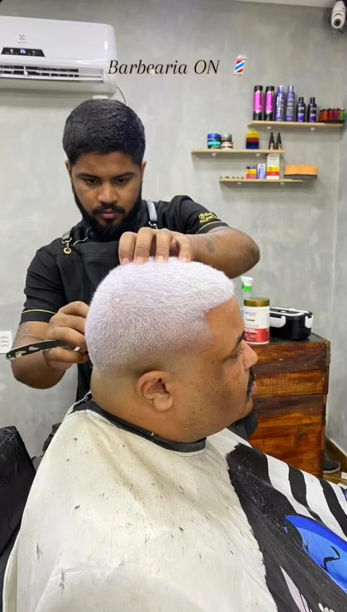
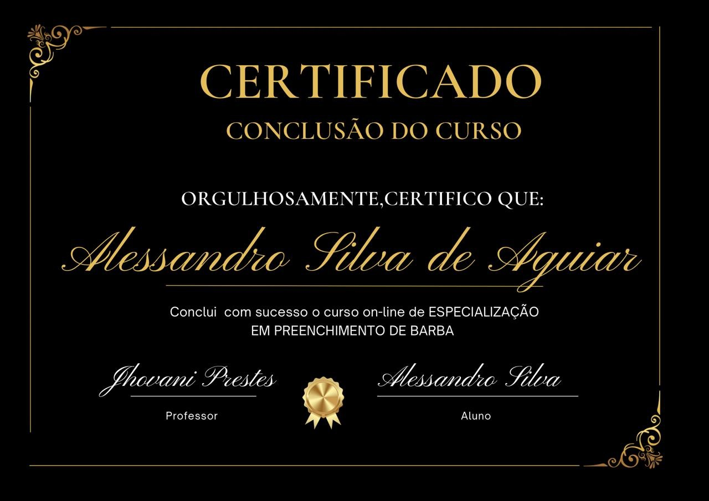

Onde a arte encontra a precisão. Sete anos de maestria, transformando visuais e elevando a autoestima.
Com sete anos de experiência dedicados à arte da barbearia, a Barbearia Nem do Corte é o seu destino para um estilo impecável. Sou especialista em design de barba, degradê, pigmentação, descoloração, e cortes de cabelo infantil. Cada corte, cada barba, é uma obra de arte, esculpida com paixão e precisão.
Você já imaginou ter uma barba mais densa, sem falhas e com um aspecto incrivelmente natural? Prepare-se para descobrir a técnica que está revolucionando o universo masculino.
O que é Nanoblading?
Nanoblading é uma técnica avançada de preenchimento de barba que utiliza microagulhas para depositar pigmentos na pele, simulando fios de cabelo de forma ultra-realista. Diferente de outros métodos, o nanoblading cria um efeito tão natural que é quase impossível distinguir os fios pigmentados dos seus fios reais.
Por que escolher Nanoblading?
Não se preocupe com o aspecto artificial. Com o nanoblading, sua barba terá um volume e um contorno que realçam sua masculinidade de forma autêntica. O resultado é uma barba que parece ter nascido com você!
Pronto para transformar seu visual? Entre em contato conosco e agende seu horário!
Localização: Rua Três número 10 / RJ - Duque de Caxias - Taquara - CEP 25270-698
Instagram: @nemdocorte